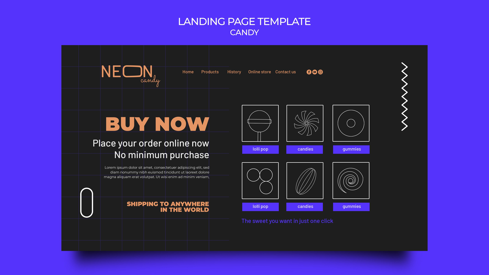

Landingpage für Startup
Eine persönliche Portfolio-Seite zur Präsentation meiner Projekte. Dunkles, modernes Design und dezente Animationen.

Portfolio Website
Eine persönliche Portfolio-Seite zur Präsentation meiner Projekte. Dunkles, modernes Design und dezente Animationen.

Dashboard UI
Eine persönliche Portfolio-Seite zur Präsentation meiner Projekte. Dunkles, modernes Design und dezente Animationen.